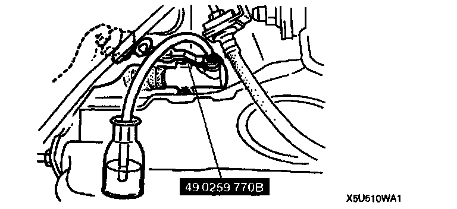

Fluid Replacement
CLUTCH FLUID REPLACEMENTCaution: Clutch fluid will damage painted surfaces. If clutch fluid does get on a painted surface, wipe it off immediately.
Note:
- Do not mix different brands of fluid.
- Do not reuse the clutch fluid that was drained.
1. Drain the fluid from the reservoir by using a suction pump.
2. Remove the bleeder cap from the clutch release cylinder and attach a vinyl hose to the bleeder screw.
3. Insert the other end of the vinyl hose into a clear container.

4. Loosen the bleeder screw by using the SST.
5. With another person slowly pumping the clutch pedal, drain the fluid from the clutch system.
6. Repeat step 5 until all the fluid is drained.
7. Change the bleeder screw tightening torque to allow for a torque wrench-SST combination.
8. Tighten the bleeder screw by using the SST.
Tightening torque 5.9 - 8.8 Nm (60 - 90 kgf-cm, 53 - 78 inch lbs.)
9. Fill the reservoir to MAX with new fluid of the specified type.
10. Bleed the air from the clutch.
11. Verify correct clutch operation.
12. Verify that there is no fluid leakage.